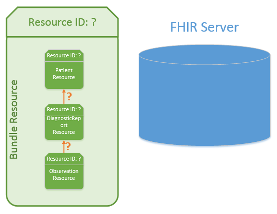
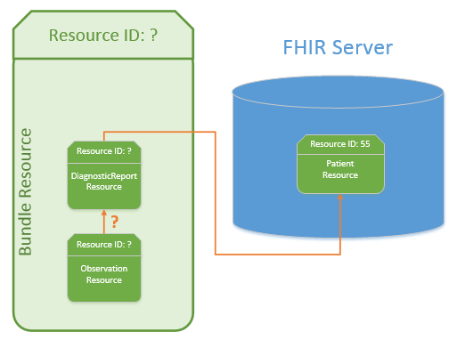

Bundle tutorial
Bundle is a container for resources, enabling you to group and transmit resources altogether at once. Guidance on the resource in general is available on the Bundle page, and on the RESTful API pages of the FHIR specification, with specific bundle types like transations, messaging and documents having their own documentation.
Contents
Step 1: About Bundle Step 2: Paging Step 3: Bundle types Step 4: Upload endpoints Step 5: Reference resolutionStep 1: About Bundle
We've mentioned in the previous tutorial on resource references that resources can "contain" other resources. So how are Bundles different? The FHIR spec is quite helpful in this regard:
- Contained resources are "in" the container resource - they can only ever be interpreted and/or changed in the context of the container
- A Bundle is a collection of resources that have an independent existence - for example, they can also be accessed directly using the RESTful API
So, contained resources cannot be GET'd, PUT'd and DELETE'd separately, or even referenced individually from outside the containing resource. Resources inside a Bundle, depending on your Bundle type and how you've uploaded it, do get created individually on the server and thus can be acted on independently.
Here is how the general layout of a bundle looks like:

- Metadata describing the Bundle type, the total amount of entries (some which may not be visible because of paging), and a link if you need to retrieve this Bundle later.
- The meat of the resource, so to speak - this is where the resources that the Bundle has are stored. Included with resources are URLs which you can use to retrieve the resource individually.
- Used when you're uploading Bundles - this is where you specify to the server what to do with each resource.
- Used by the server when it's responding to your upload request - this is where it says how each operation went.
Here's an annoted example Bundle you'd receive from the server when searching:
Paging
When the Bundle is too big to send in one go, because it has many resources within it, the server can choose to break it up into pieces (called "pages"). To allow you to easy navigate from one page to the next the Bundle provides links to the next page within it. So the client, after getting a page, can request the next page and so on until the end. In addition, there are also links to the previous, first, and last pages provided in each Bundle (see the example below):
See more information on paging on the FHIR spec.
Step 3: Bundle Types
There are several types of Bundles defined by FHIR: document, message, transaction, transaction-response, batch, batch-response, history, searchset, and collection.
| Bundle type | Bundle description |
|---|---|
| searchset | Used in searching - an operation you're already familiar with - it's the Bundle that collates search results into a single response. As some search results can return a large number of results, this is where the idea of paging comes in. |
| document, message, collection | Used in specific data exchange paradigms. Loosely speaking, you can think of document-type Bundles as those representing a CDA document, a message-type Bundle representing a V2 message, and a collection as a general catch-all type. |
| history | Similar to searchset, but is specialised for the _history operations when you're looking at the history of operations on single instance of a resource. For example, looking at all the edits made to a single Patient resource. |
| batch, transaction | Allows you to condense multiple operations into one - say you'd like to upload 5 resources but don't want to do it 5 times. You can gather all of the resources up into a bundle and upload it all at once. The difference between a batch and a transaction is how things are handled when an issue happens. When one of the operations of a transaction fails, the entire transaction fails and no changes happen on the server as a result of the transaction. If one of the operations of a batch fails, then the rest of the operations can still complete successfully. |
| batch-response, transaction-response | What the server will respond with where it tells you what happened with each operation within your batch or transaction Bundle. |
Step 4: Upload endpoints
If you upload a Bundle to [Service Root URL]/Bundle, your Bundle will be stored as-is, just like any other resource. Sometimes this is the desired behaviour, alternatively, you may like the server to actually process the Bundle. For example, the transactions in your transaction Bundle to actually be acted upon. In order to get the server to unpack and process your Bundle, you need to upload to the [Service Root URL] directly. This most reliably works for transaction, batch, and document Bundle types. How the server deals with other Bundle types is up to it. Here is a complete list of endpoints that Bundles may be uploaded to:
| Endpoint | Bundle type | Effect on the Bundle |
|---|---|---|
[Service Root URL] |
batch, transaction | Bundle is processed by the server - individual operations/resources are unpacked and acted upon. |
[Service Root URL] |
history | Bundle may be be processed by the server as its structure is very similar to batch/transaction type. |
[Service Root URL] |
document, message, transaction-response, batch-response, history, searchset, collection | Bundle may be processed by the server as create/update operations. |
[Service Root URL]/Binary |
document | Bundle is stored as-is by the server as binary content and not acted upon. |
[Service Root URL]/Bundle |
document, transaction, transaction-response, batch, batch-response, history, searchset, and collection | Bundle is stored as-is by the server and not acted upon, same as if you uploaded a Patient resource. |
[Service Root URL]/Bundle |
message | Bundle is processed by the server - server will store the Bundle as-is, index it on the MessageHeader, and act on the message. This is the RESTful endpoint for a message Bundle |
[Service Root URL]/$process-message |
message | Bundle is processed by the server as if it is a message. |
Step 5: Reference resolution
References between resources within a Bundle can come in two types. Either references to resources where each resource is within the Bundle but not as yet on the server.
{kind=link}
Or references from resources in the bundle to resources that are on the server but not found in the bundle.
{kind=link}
When uploading a bundle of resources to a server, as in the first case, it can be a little confusing to understand how to form the reference between the resources. How can you reference a resource if the server has not as yet assigned an ID to it?
The simple answer is that the bundle creator can assign temporary resource IDs to resources in order to create the references between each resource. Then depending on the way you upload the Bundle to the server the server can use your IDs to understand the linkage between resources and will assign its own server IDs and update all the existing references with the new IDs. In these cases, the server will then reply with a return Bundle that informs the sender of these updated IDs. If you refer back the Bundle layout image at the beginning of this page you can see the 'Bundle/entry/response/location' element where these new IDs would be returned as a URI. Whether the server performs this identification or not is dependant on the Bundle type you are uploading and the endpoint you are uploading it to. The table below talks more to this point.
Unlike general resources you need to take care when resolving references between resources in Bundles, you can not just assume the reference is to a resource on a server, it may be a reference to a resource within the same Bundle and you should assume this first. For more on this topic refer to the FHIR specification here:Resolving references in Bundles
The table below describes the effect Bundle type can have on uploading Bundles:
| Bundle type | Effect on Bundle upload |
|---|---|
| document | You can create your own IDs for resources and use them as references for other resources within the Bundle. A document Bundle typically is stored as-is on the server, without it getting unpacked - although if you upload it to the [Service Root URL] instead of the usual endpoints then it will be up to the server to unpack the Bundle and replace your assigned resource ID's with its own (though it doesn't have to). |
| batch | You cannot reference other resources inside the Bundle - thus all resources inside a batch Bundle must be completely independant, only reference resources already created on the server, or resources available on other servers. |
| transaction | You can reference other resources inside the Bundle using their business identifiers in a simplified search query. It is then on the server to replace the search query with the resource ID's when processing the Bundle. See Conditional References section of Transaction Processing Rules for more. |
| message | Similar to document - you create your own IDs and use those as references within the Bundle. In the event that you upload a message Bundle to the RESTful API on the [Service Root URL]/Bundle endpoint (instead of the usual [Service Root URL]/Bundle/$process-message), the Bundle is not unpacked and only the MessageHeader is indexed. |
| collection, searchset, history | You can create your own IDs for resources and use them as references within the Bundle - although the server will most likely store these resources as-is and not act on them, since these types of Bundles are typically for servers to send to clients. |
That's about it for the difficult parts of a Bundle! Have a look at the FHIR page for Bundle now for things like uniqueness rules and search parameters of a Bundle.